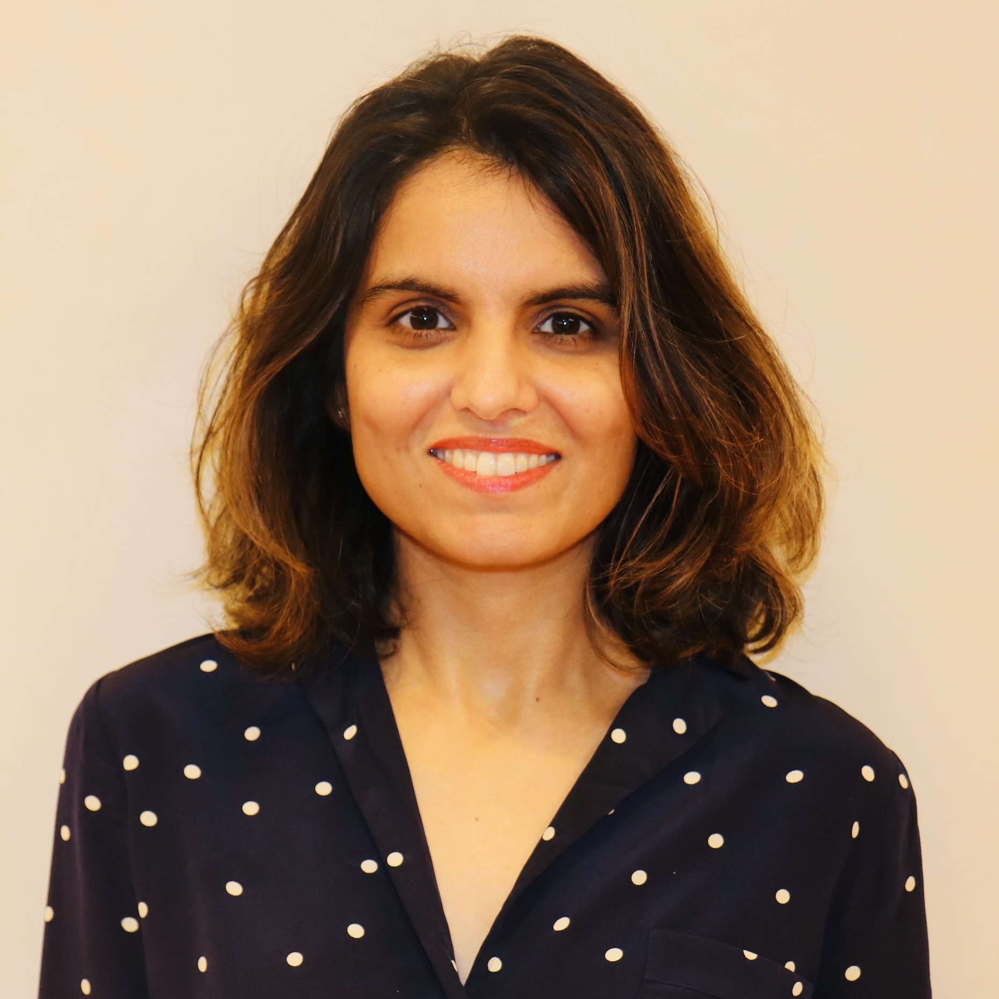

|  |
Charu KohliProject Manager and Emotional Intelligence Coach.
Impactful leader emphasizing operational standards and strategic initiatives to deliver consecutive wins across the organization. Apply "human"component to departmental leadership, developing best-in-class programs to foster growth.
Link to: Contact information |
PROFESSIONAL SUMMARY
- Proactive, results-driven visionary driving talent development and organic growth from within. Utilize people-centric strategy where people steer the brand. Propel organizations forward, enhancing work culture through employee engagement and team building.
- Steer productive teams through project and program management. Efficient as natural communicator with business and emotional intelligence. Implement strategic, operational approach to departmental framework, employee training, and development programs.
- Improve business outcomes, solve complex problems, and design new processes. Tackle challenges head-on, learning on the go and thriving in forward-thinking environments. Partner with stakeholders to build solvent infrastructure from ground up.
- Transformative change agent with entrepreneurial spirit, expertly balancing practical aspects (roadmap development, planning, and execution) and interpersonal elements (team leadership, communication, and partnership) to drive business growth.
WORK EXPERIENCE
SOCIETE GENERALE | New York, NY |
PROJECT MANAGER/CHIEF OF STAFF | 2016 - 2021
SCOPE: Program Management | Cultural Transfomration | Employee Relations | Operations | Performance Management Cultural Transformation Projects | Processes & Protocols | Growth Opportunities | Business Solutions | Business Needs | Talent Development | Hiring & Training Staff | Program Design | Diversity
Lead small team with “mighty forces”. Oversee project management team as Chief of Staff and project manager with program oversight responsibilities. Develop vision for strategic communication strategy with team-oriented mission, delivering cultural program initiatives across the organization. Manage departmental budget, partnering with department heads to rebuild departmental infrastructure and reporting processes. Produce monthly and quarterly reports to inform executive committee, board members, and external stakeholders of new campaigns and their impact across the organization. Mentor senior leaders to improve individual and team performance.
- Apponinted to lead critical projects within tight deadlines, offering leadership influence set beyond job description. Integrated platforms and policies encompassing core message of organization.
- Generated innovative communication strategy to build awareness and spur action within the organization.
- Quarterly Newsletter: Highlighted program achievements in editorial section, providing a live look at how employees are applying change to daily work responsibilities and peer-to-peer interaction. Spurred uptick in staff involvement.
- Launched 4-week campaign to align company values organization-wide across 4 US locations with 2K+ total employees. Developed analog training programs for employees to complete at work desk. Received outstanding feedback for program innovation and delivery
- Partnered with departmental heads to rebuild HR infrastructure with focus on compliance, employee relations, learning and development, and communication strategy design.
- Improved gender diversity by recommending and implementing actionable task items as project manager, overseeing team of 17.
Change Mangement & Training Programs
- Achieved 89% staff completion rate for in-person training programs across two continents. Structured educational program for global associates, aligning corporate strategy with resource optimization and procedures.
- Applied change management strategies to guide associates through targets in service standards, customer relations, stakeholder interests, and job responsibilities.
- Spearheaded one-on-one executive coaching program, mentoring 7–8 senior leaders.
- Created first forum highlighting women in technology. Advanced women’s knowledge base and exposure within the organization.
- Structured executive committee, providing unique vision for communication strategy. Instituted townhall meetings to raise employee morale and integrate feedback into program delivery.
Growth & Performance Quality
- Created path for growth and advancement for global employees, promoting involvement and professional accomplishment.
- Boosted engagement scores. Developed dashboard to measure impact across organization and foster culture of trust.
CITIBANK | Long Island City, NY |
PROJECT MANAGER, SUPPORTING CHIEF OF STAFF | 2014 - 2016
Hired to apply expertise in culture and financial management to project management role supporting Chief of Staff. Led global culture transformation initiative, developing programs for 150K employees at consumer banking locations worldwide. Built daily agenda for CEO and delivered comprehensive reports serving as snapshot of all business divisions. Oversaw distribution of regional line of business for APAC and LATAM.
Change Management, Talent Development, & Workforce Planning
- Appointed core team member for culture, project management division. Developed global culture training program for 23K senior managers in global consumer bank division.
- Built culture of success and aligned language across all locations within two years of GCB culture transformation journey.
- Coordinated regional training rollout in APAC and LATAM for 7K senior managers. Ensured program compliance across 16 countries
- Standardized weekly reporting structure and initiated monthly cascade of cultural-themed email communications.
- Managed inventory and global distribution of training materials, procurement, and invoicing processes through internal system.
PRIOR WORK EXPERIENCE
TARGET | New York, NY |
HR TEAM LEADER | 2012 - 2014
Hired to lead recruitment processes for attracting top-tier talent with 5 direct reports. Implemented tactical strategies across different levels of HR from recruiting and training to improve performance management. Revitalized workforce structure and employee morale by building HR model for employee relations and human capital development programs. Ensured compliance with federal, state, and corporate HR policies.
Operational Leadership, Talent Development, & Human Resources
- Turned around high-turnover culture by fostering an environment of trust. Hired cohesive group of new staff within 6 months of hire to bolster department and improve team engagement across department.
- Turned around under-performing metrics in training and compliance. Developed new process structure for training program comprised of new hires.
- Ensured compliance with industry compliance requirements. Built processes and checklists to ensure accountability.
- Maintained open and transparent culture for team with “open door and open heart” policy.
JP Morgan & Chase, Private Client Banker (2008-2012)
KEY SKILLS
Program/Process Design | Customer Service | Presentations | Logistics | Performance | Talent Development | Coaching | Conflict Resolution | Strategic Direction | Workflows | Risk Management | Management Experience | PMP | Coordinate Projects | Internal Stakeholders | Event Management | Investment Banking | Management Consulting | Communication Strategy | Innovation
DISCSTYLES LEADERSHIP ASSESSMENT
Natural Strengths: Engaging and approachable leader with a “people first” mindset and natural ability to develop longstanding relationships with others. Agile communicator building and motivating teams to fast-track talent development and elicit transformative results across diverse industries. Transform organizational structure, contributing to growth through innovative thinking.
Leadership Traits: Persistent. Patient. Results-driven. High Emotional Intelligence. Flexible. Team-oriented.
EDUCATION & PROFESSIONAL DEVELOPMENT
MBA, West Texas A&M University | BBA, Economics, West Texas A&M University
Project Management Professional (PMP), Project Management Institute | Emotional Intelligence Coaching Certification, Daniel Goleman